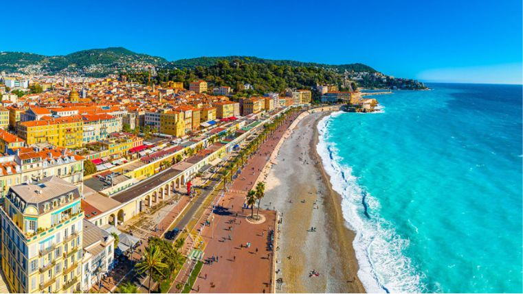

Qui sommes-nous ?
Fondée à Nice en 2020 en plein cœur de la crise
sanitaire, la e-galerie OBJECTIF est née d'une
conviction profonde : l'art ne doit jamais s'arrêter.
Portée par un trio passionné, notre plateforme a
vu le jour avec une mission simple mais
essentielle : faire vivre la création artistique et la
rendre accessible à tous, directement depuis
chez soi.
Au fil des expositions virtuelles, depuis notre
ancrage méditerranéen jusqu'aux quatre coins du
web, nous mettons en lumière des photographes
aux univers singuliers, allant de jeunes talents
émergents à des visions résolument modernes.
Plus qu'une galerie en ligne, OBJECTIF est une
passerelle ouverte sur le regard d'artistes
d'aujourd'hui, à découvrir sans modération.
